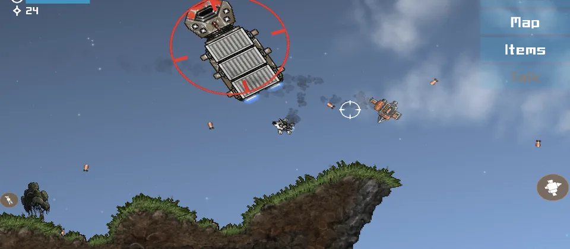

Do not rush
Early ships are weak, so pick fights carefully.
Destination Sol
Destination Sol is an open-source arcade/RPG where you fly through a star system, mine, fight, and improve your ship.
Download Destination Sol
Basics
Space
Early ships are weak, so pick fights carefully.
More damage makes every trip safer.
A moving ship is harder to hit.